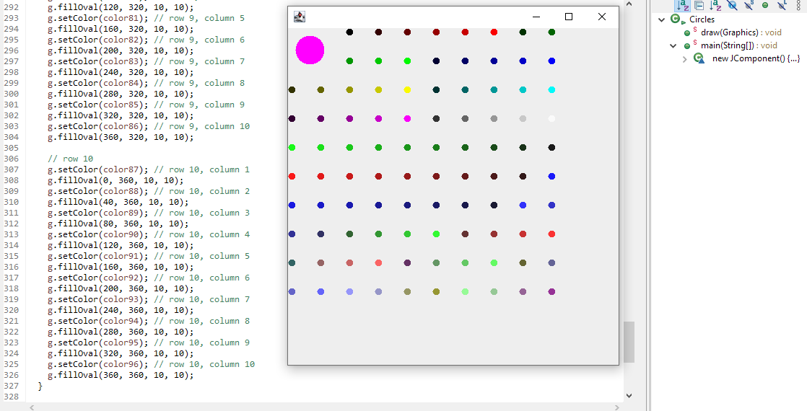

In ICS 314, we covered software development and built a portfolio on GitHub comprised of the projects and essays that we were assigned throughout the duration of the semester. I’ve listed the core concepts that we covered in class below, but for the sake of time (and the asignment’s guidelines) I will only cover a few of them.
This semester we utilized GitHub to either publicly or privately publish our projects that we worked on for class. Our final project specifically was an open source project and allows for any user to download the files and either launch the website we created for their own purpose, or tweak it as necessary. Open Source Software Development is when a developer publically publishes their code that anyone can view or edit. This can be a great tool for new developers to build upon the idea that someone else created, or have others modify something that we have created.
In the game industry, most companies do not publish their code as open source. In fact, they typically crack down with legal action on those who obtain their source code without their permission. However, there are games that have been developed as open source. This has allowed for the collaboration with the community and has the ability to evolve the game beyond the vision of the original developers. There are also games like Minecraft or Grand Theft Auto V that players have managed to modify the source code and implement their own features. Some companies don’t enjoy this practice, but this has led to branches of the original game to be created, basically standalone games themselves.
Due to my interest in UX/UI design in the game development industry, joining open source game projects can be a great way to build my portfolio and gain experience.
Regardless of the programming language that you choose to code in, it is possible to use any program to do so. In ICS 212, I programmed C code primarily in TextEdit and transferred it over to vi afterwards. However in the past few decades, various Integrated Development Environments (IDEs) have been created to provide various tools to increase efficiency and bring quality of life features to developers.
In ICS 314, we utilized the IDEs JSFiddle and primarily IntelliJ IDEA for our software development. In IntelliJ, we were able to use tools like ESLint and TestCafe. ESLint would mark code that either had syntax errors or did not follow the class coding style. Coding style is a set of guidelines that helps prevent errors and creates consistency throughout the code. Having a set coding style is incredibly important when it comes to group projects since each of the group members needs to be able to read and understand each other’s code. TestCafe was a tool that allowed us to create test cases in IntelliJ and it would open a browser and attempt to run each test. Having a testing tool allows for a thorough check for bugs that you may not have thought of initially.
Learning how to use a greater variety of IDEs will give us as developers access to more tools, and we can find the IDE that suits our needs the best. Many companies in the tech industry such as Google and Meta allow their software developers to use their IDE of choice, so it is important to experiment now, especially since we can add them to our portfolio.
Similar to how developers use IDEs to provide them with tools to improve their programming experience, UI Frameworks exist to provide pre-built assets. Assets such as buttons, forms, rows, or colummns can already be built in HTML and styled in CSS. But if you wanted to create a more complex program with a multitude of components, then you would have to build each of them individually. With UI frameworks, we can import the assets that we want to use, and it takes far less space in your code.
Without knowing, I’ve been using UI Frameworks from the very beginning of my programming journey. In ICS 111, we were tasked to create a program in Java that generated a grid of circles of various sizes and colors.

Since Java comes with frameworks in the form of Java Libraries, I was able to import the Circles library that provided me with functions that generated circles as long as the correct parameters were entered.
In ICS 314, we used React Bootstrap for web application development. It provided us with assets like logos (Instagram, Facebook, LinkedIn, etc), forms, cards, and buttons. We learned to both build a website from scratch and also work off a template since it provided more complexity. Learning to use more UI frameworks throughout the time that I am in school will be helpful to broaden our toolset. Companies like Google utilize Angular as their main front-end framework, and X (formerly Twitter) uses ReactJS. Regardless of what industry we choose to pursue, we can prep beforehand by learning how to use the various frameworks and IDEs of the companies we’re interested in.